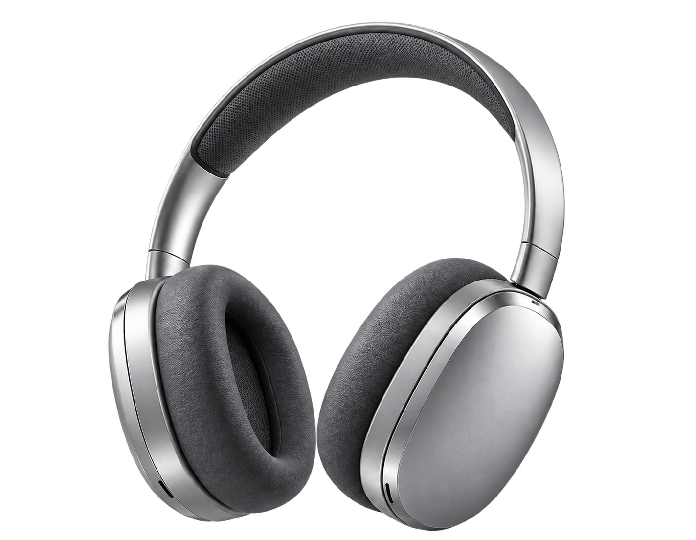
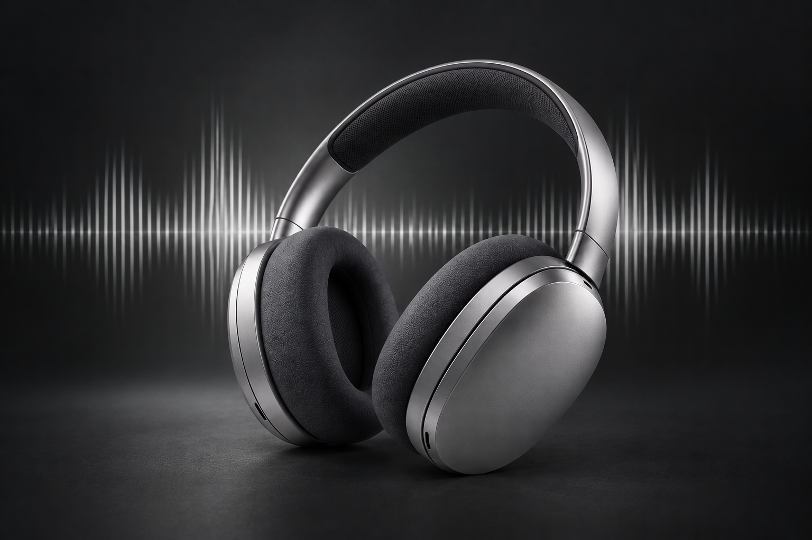
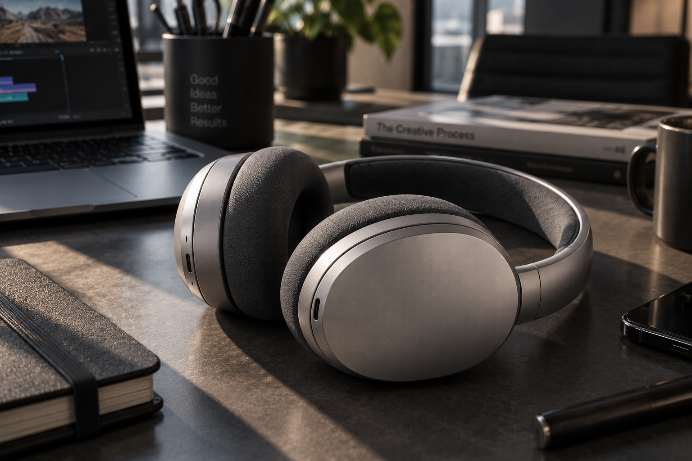
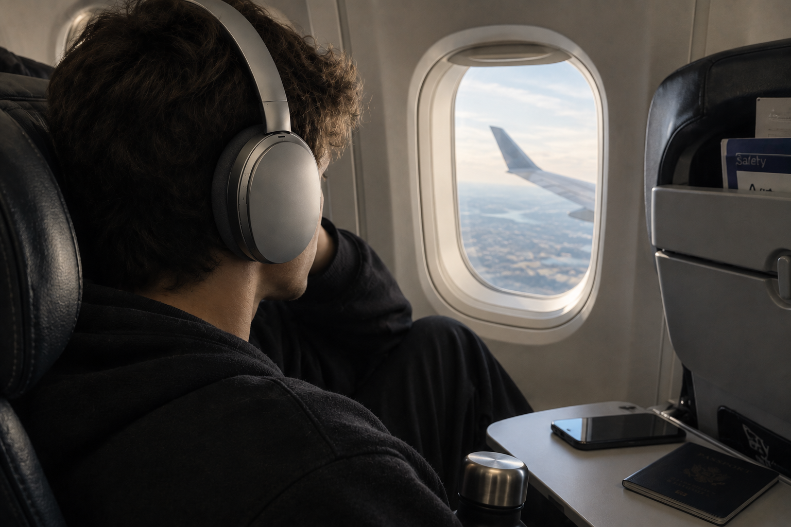
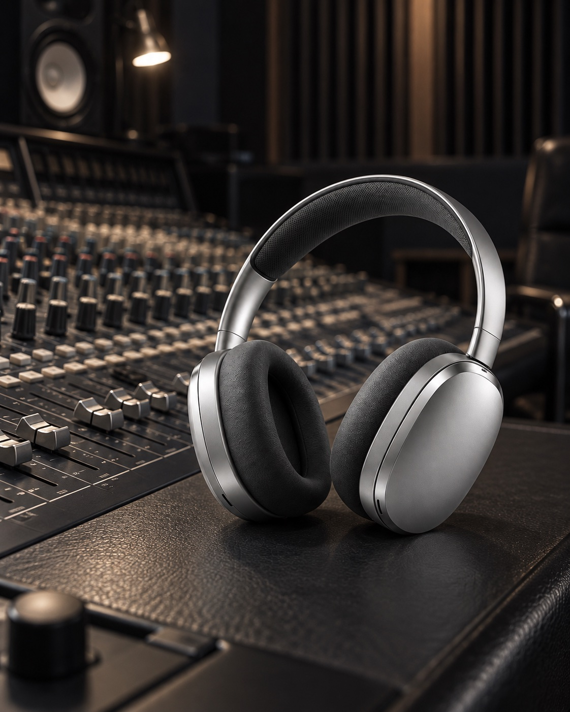

Silencio adaptativo
Micrófonos de alta precisión ajustan la cancelación de ruido a cada espacio, sin aislarte de lo esencial.
AURA ONE / SMART SOUND SYSTEM
Cancelación inteligente por IA y acústica Hi-Fi, afinadas para cada lugar.

AURA lee tu entorno en tiempo real y deja pasar solo lo que importa.
Micrófonos de alta precisión ajustan la cancelación de ruido a cada espacio, sin aislarte de lo esencial.
Diez minutos de carga entregan cuatro horas de escucha.
El escenario sonoro permanece estable mientras te mueves.
Aluminio aeronáutico y espuma con memoria, calibrados para horas de uso.
Componentes elegidos para preservar detalle, respuesta y comodidad.

Graves controlados, medios naturales y aire suficiente para escuchar cada textura de la mezcla.
UN SISTEMA. TRES RITMOS.



Concepto editorial / Demo
“El tipo de silencio que no apaga el mundo. Lo vuelve más nítido.”
FORM Magazine
“Una referencia nueva para el audio inalámbrico.”
SIGNAL
“Ingeniería precisa con una presencia sorprendentemente serena.”
OBJECT
Recibe acceso prioritario, disponibilidad de acabados y la fecha exacta de lanzamiento.
Te avisaremos cuando AURA One esté disponible.